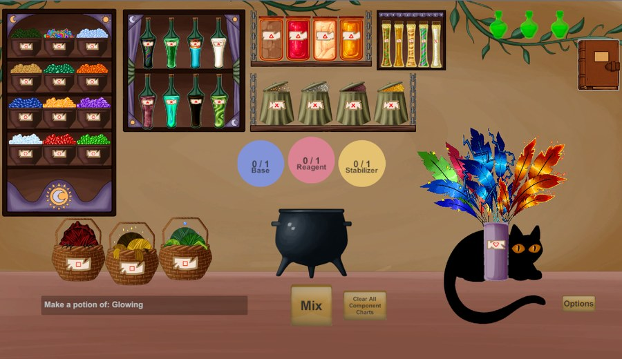
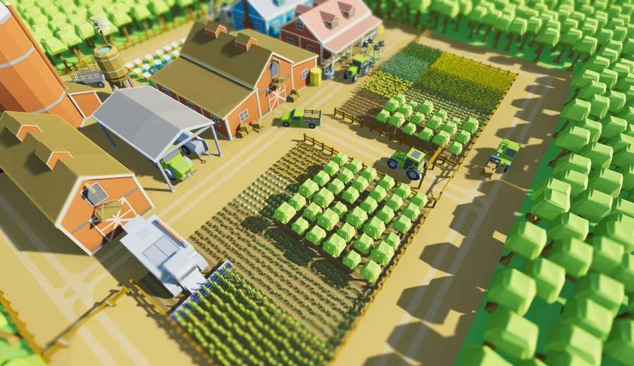
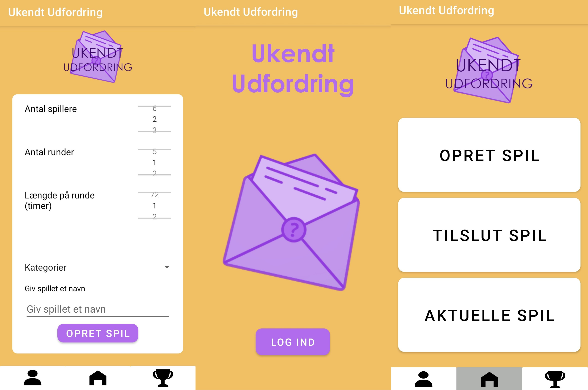
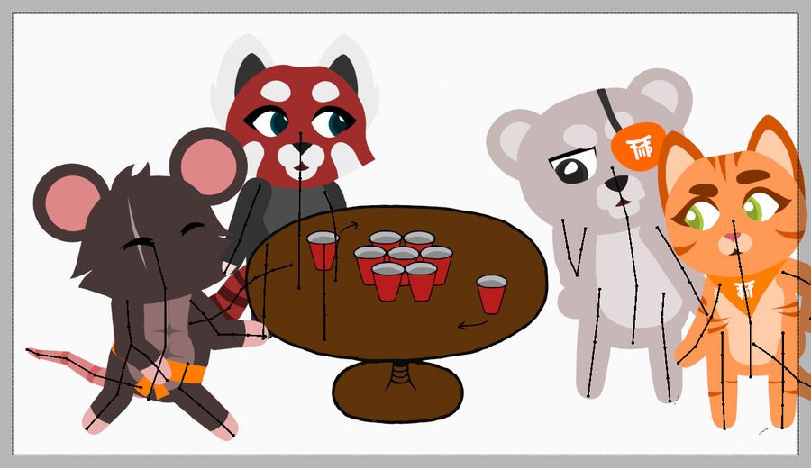
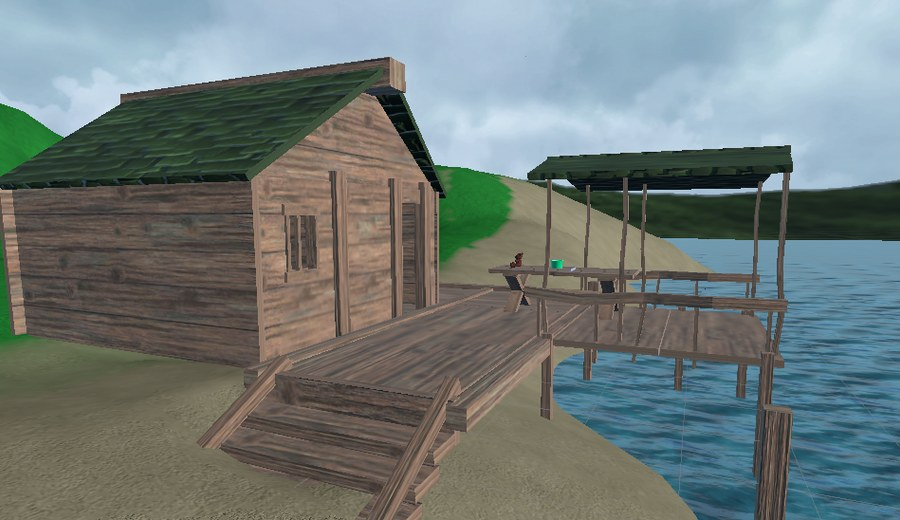
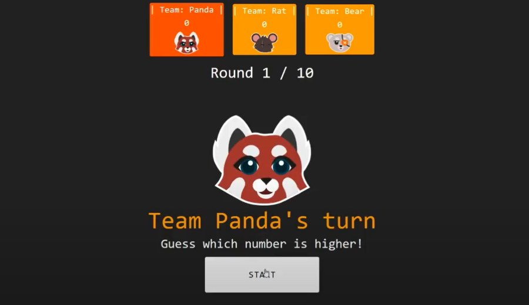
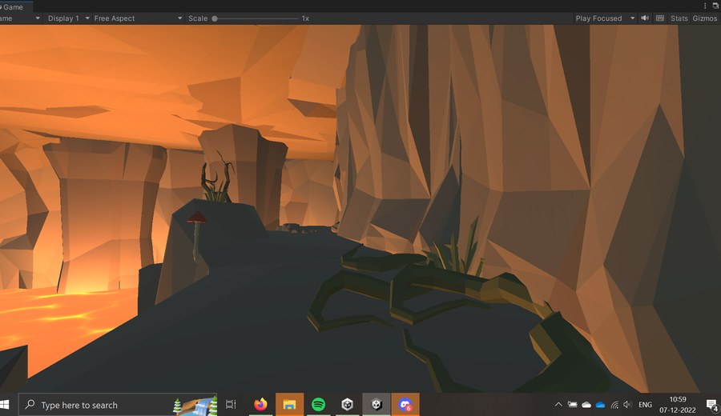
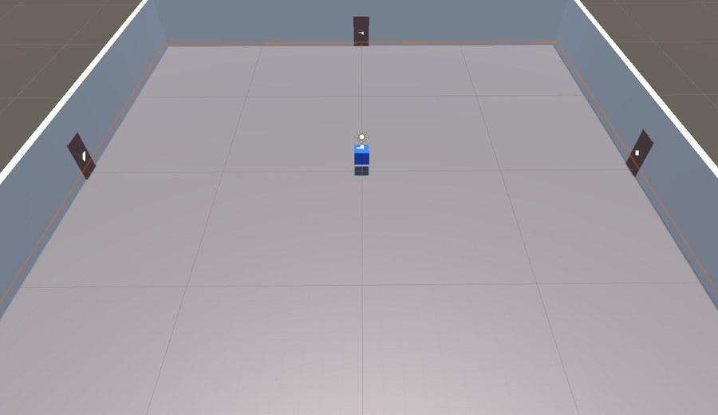
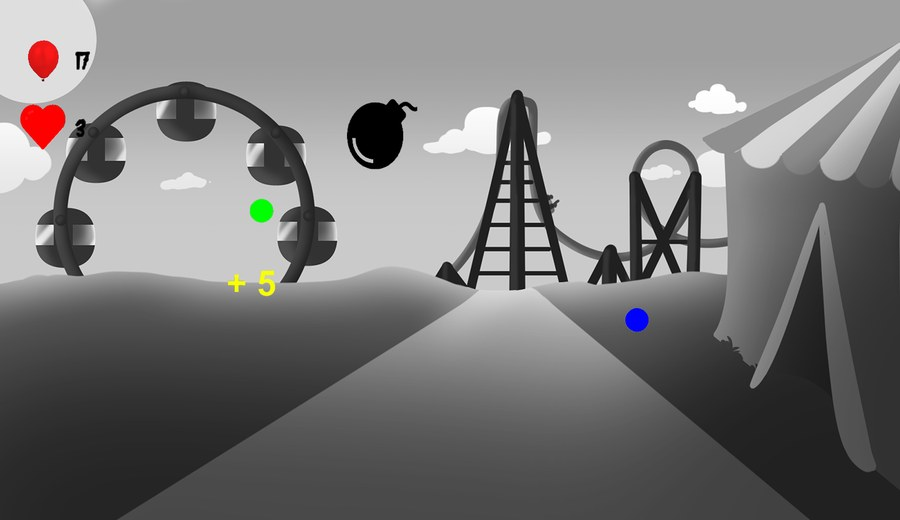
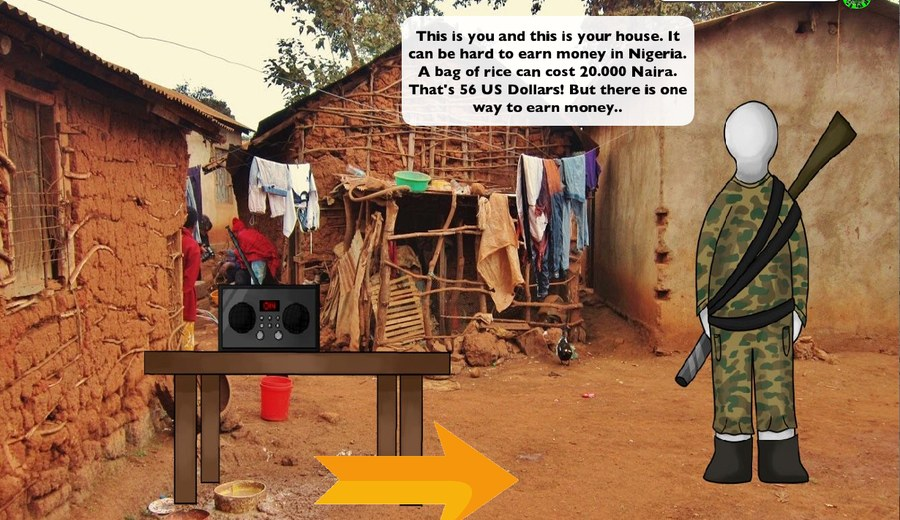

- Interviews
- Usability testing
- Experimental design
Research-driven UX/UI Designer
I combine human-computer interaction, user-centered design, prototyping, and usability testing to transform research insights into intuitive digital experiences.
- Wireframes
- User flows
- Information architecture
- Canva
- Adobe XD
- HTML/CSS
- Unity
Featured projects

P10 Learning UX
Serious Game Interface for Math Learning
Role: Research, game UX, prototype design, evaluation.
Problem: Students often struggle with abstract fractions and probability concepts.
Outcome: Tested a serious game prototype across three study setups with Rasch modeling, interviews, and retention analysis.
- ResearchGathered educator insight and reviewed learning theory, multimedia learning, and serious game methods.
- PrototypeTranslated fractions and probability concepts into game mechanics, feedback loops, and UI states.
- TestingEvaluated understanding and retention through questionnaires, interviews, and statistical analysis.

P6 Healthcare UX
Pain Distraction for Children
Role: VR experience design, child-centered interaction, hospital testing support.
Problem: Children aged 5 to 8 need calming distraction during needle-related procedures.
Outcome: Tested at school and Rigshospitalet; most participants reported reduced pain perception during VR.
- ResearchWorked from a hospital context and target age group, with pain scales and ethical constraints.
- PrototypeCreated a farm-based VR experience where visuals supported therapeutic soundscape navigation.
- TestingRan initial school testing, then final testing during needle-related medical procedures.

P2 Mobile UX
Challenge-Based Android App
Role: Mobile interaction design, Android prototyping, remote user testing.
Problem: Danish youth experiencing social isolation needed lightweight ways to initiate connection.
Outcome: Tested two iterations with 16 young people; the second version worked as a proof of concept.
- ResearchMapped loneliness, social connectedness, multiplayer games, gamification, and interaction design.
- IterateBuilt a challenge-based Android prototype, tested remotely, and changed the second iteration from findings.
- OutcomeThe first test was weak, but the revised version showed enough promise to validate the concept.
Project gallery

P9 Internship UX
Dojo Entertainment
Problem: Drinkingdojo.com needed clearer game communication and user feedback for improvement.
Outcome: Produced tutorial visuals, Fireball media assets, and survey-based UX insights for the startup team.

P8 Immersive UX
VR Presence and Spatial Interaction
Problem: VR users may lack believable tactile feedback when manipulating virtual objects.
Outcome: Evaluated two conditions with 26 participants using IPQ scores and observed behavior.

P7 Adaptive UX
Adaptive Difficulty Drinking Game
Problem: Losing teams in drinking games can be pushed into unfair or unsafe penalty loops.
Outcome: Tested four groups of six; players found the adaptive version more balanced and enjoyable.

P5 Narrative UX
The Warlock of Firetop Mountain
Problem: It was unclear whether atmosphere changes could increase perceived player agency.
Outcome: Ran two 30-participant conditions and identified which agency measures changed significantly.

P4 Audio UX
Sound, Emotion, and Navigation
Problem: Digital environments may guide users emotionally through sound, but the effect needed testing.
Outcome: Tested 30 participants in a four-door Unity environment and translated findings into sound-design recommendations.

P3 Computer Vision
Kinect Body Tracking Accuracy
Problem: Kinect body tracking accuracy needed to be measured inside an interactive movement game.
Outcome: Built a Unity test game and OpenCV pipeline; results showed accurate tracking 79% of the time.

P1 Information UX
The Hunter
Problem: Young Danish students needed an engaging way to understand wildlife trafficking and disease spread.
Outcome: Tested remotely with 17 students; the prototype informed some participants and revealed clear improvement areas.
About
A UX/UI designer with a technical HCI foundation and a research-first mindset.
Education
Specialties
Methods
How I approach UX/UI work
-
01
Understand the user context
Define users, tasks, constraints, pain points, and the evidence needed to make design decisions.
-
02
Prototype the interface
Turn flows, wireframes, and interaction concepts into testable low- or high-fidelity prototypes.
-
03
Evaluate and refine
Use usability testing, behavioral observation, and qualitative and quantitative analysis to improve the experience.
Contact